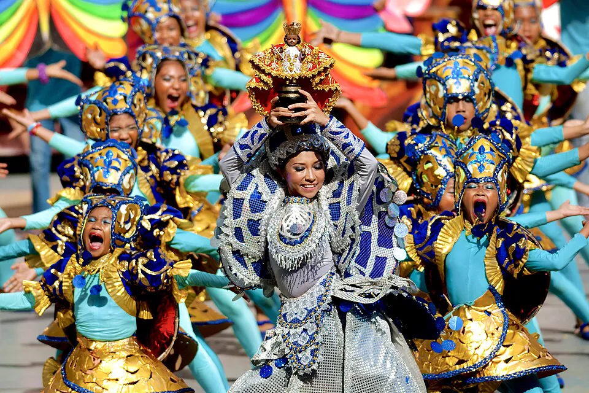
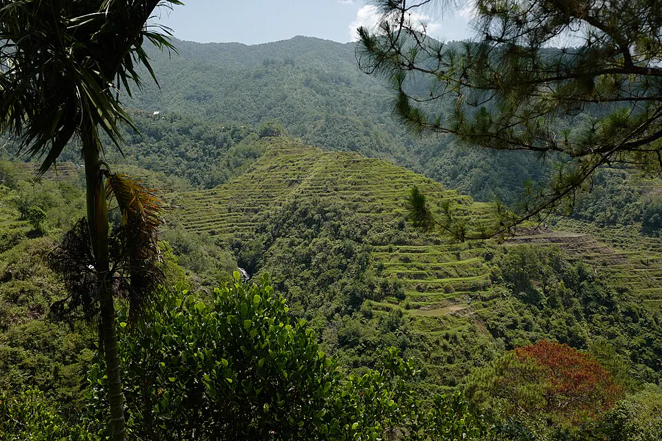

Sinulog
Dancers move like a river’s current, two steps forward and one back, for the Santo Niño kept in Cebu since the 1500s.
Each festival belongs to a town, and each town keeps it in public, on its streets and plazas. Pick a name to fly in.
Each festival belongs to a town, and each town keeps it in public, on its streets and plazas. Pick a name to fly in.
The procession for the Santo Niño and the street dance happen on the same weekend, to one steady drum.
Dancers darken their faces with soot and wear costumes of shell, seed and feather, and the drums keep going for a week.
The procession passes the dressed houses, and the town chooses the family with the best façade.
The street dance carries the dress, beadwork and steps of the city’s first communities, between stalls heavy with fruit.
Vigan has been a UNESCO World Heritage city since 1999, and families still live and trade in these houses.
Water from the forest above is shared field by field, through channels each family helps to keep.
One thread from January to December. The filled knots are the months we document so far.

Dancers move like a river’s current, two steps forward and one back, for the Santo Niño kept in Cebu since the 1500s.

A week of drums for the Ati, the first people of Panay. Anyone can join the street dance, and that openness is the tradition.

Farmers thank San Isidro Labrador by dressing their houses in rice, fruit and kiping, rice wafers dyed bright. Read the Pahiyas story

From madayaw, good and beautiful. Davao gives thanks for its harvest, and the city’s eleven tribes lead the parade.
Some heritage has no date. It is a landscape or a street, kept every day by the people who live there.

Ifugao families carved these terraces by hand and still plant them. When young people leave, the walls start to fall.

Brick below, wood above, capiz in the windows: houses built by Filipino, Chinese and Spanish hands. Read the burnay story